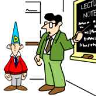
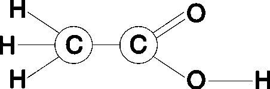
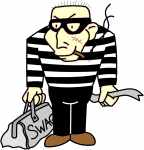
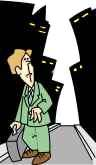
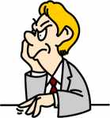

| Ethics Dictionary | Conditions Formulas | PTS Glossary | FAQs |
|
|
| Ethics Dictionary | Conditions Formulas | PTS Glossary | FAQs | |
Note: This chapter is from 'The Road to Clear", Level 2.
O/Ws and Phenomena
Note: This chapter from ST-2 is included to explain the mechanisms of Withholds. Only an ST-2 auditor would pull overts and withholds as auditing. An Ethics Officer is routinely dealing with people with Withholds and needs to know what he is dealing with. Without being an ST-2 auditor he still has the tool of O/W write-up as described under Ethics Tools.
This chapter contains some interesting data concerning Overts and what lies behind them. It also contains data of other phenomena connected with O/Ws.
Overts and Misunderstoods
First, let's look at what has been called
"The cycle of an Overt". It has to do with words and symbols at the
root. The following explanation goes back in time from the present. It goes like
this:
4. A person seems to have a motivator.
3. This is because of an overt the person has done.
2. The person did an overt because he didn't understand something.
1. The person didn't understand something because a word or symbol was not understood.
Many conditions of feeling restimulated, 'Banky', misemotional and even ill can be traced back to misunderstood symbols or words. This may seem strange, but misunderstoods can have a profound effect upon a person and his case. This can actually be demonstrated. Clearing up words and symbols, using a Meter to find them all, can be very therapeutic and cause unexpected and dramatic improvement of general condition. The whole subject of clearing words and symbols is mainly covered in the study technology. Here we will look at how these data relates to overts and withholds.
 |
Misunderstoods make the |
From start to end the cycle goes like this:
1. A person doesn't understand or misunderstands the meaning of a word or symbol.
2. This causes the person to misunderstand the text or area where the symbol or word is used.
If it is in a conversation it will cause the person to misunderstand the speaker.3. This will cause the person to feel different from or antagonistic to the speaker, the materials, etc. Feeling this way makes it ok to commit an overt.
4. He does an overt against the person or subject. Having done that, the person now feels he has to have a motivator. He pulls in things from his Bank. Depending on the situation (and what is available) he can key in all kinds of conditions and even illness.
This is what is behind stupidity and lack of ability. It's behind unruly school children and even at the root of some criminal careers. It is why word clearing and using good study technology can have surprising effects on a person's well being.
Example: Let's say the person is studying some technical materials. At some point he misses understanding a technical formula; the section right after that word will be a blank in his memory.
 |
|
Chemical Formula - we'll leave it at that. |
(In trying to find the word you would always look back in the section just before the blank, find the word and get it defined. You will then find that the former blank area is not blank any more. You may have to clear up dozens of words or more in some cases, of course.)After the blank, he will enter into the second phenomenon: the overt cycle which follows a misunderstood word. When the word was not understood or misunderstood, the person experienced a non-understanding (a blank) of the data just after that. The person's solution for the no-understanding was to separate himself from it. He would leave for a break or look out the window. The person may think to himself, "What am I doing here anyway?". You could say he then 'filled in the blank' with something he didn't like or felt antagonistic about. He starts to loose his concentration and interest. He thinks of critical remarks about the subject and other downsides to it. The person then finds it ok to act up and be noisy and rude about the whole thing. He has started committing overts against the more general area of the subject.
After committing these overts he has second thoughts; he tries to restrain himself from committing those overts. This self-restraint pulls however things in toward him and makes him crave motivators. This is followed by various mental and physical conditions of discomfort and restimulation. Also by expressing various complaints, fault-finding and look-what-you-did-to-me and it leads to general misemotion and restimulation.
Example: This is a degree of the typical unruly school kids' behavior. You will see school kids with many misunderstoods being 'stupid' about the subject, sabotage class in more and more inventive ways. They will do all kinds of other things in class than trying to learn the subject at hand. They will pass messages, play video games under the table, wet the teacher's chair, etc., etc, which are all overts against the broader area of the subject. If you check such troublemakers vocabulary you will see it is very limited. If you can make them sit down long enough to start to clear up their many, many misunderstoods, you will little by little see a change in behavior. It can add up to a complete turn- around.
Many misunderstood words and the behavior that follows, will eventually justify a departure, a blow of the person if things are allowed to continue this way.
Example: If you examine aggressive people and even violent criminals committing senseless crimes, you will find a large group, that has this in common: their understanding of the language and their vocabulary is very limited. The guy that goes into a store and commits a robbery for a carton of cigarettes or the big brute, you can hardly speak to, but who is a constant menace to his environment, has this in common: they don't understand what people say very well - let alone understood what they were supposed to have learned in school. You will find they have tons of misunderstoods. Their situation may have advanced way beyond where simply clearing up misunderstoods would do the trick. It has now become their way of life. But it is a well known fact, that well educated people are much less prone to violence.
 |
|
|
Career criminals |
Taking care of clearing all |
Cleaning up this restimulation, when done in time, is not that difficult. It would consist of locating the area of the motivator. Narrowing down the area or materials that was misunderstood. Find what words or symbols were misunderstood specifically. Clear these words or symbols up with the use of dictionaries and handbooks, examples and demonstrations. Clay demonstrations and other tools of study technology can also be used with excellent result.
This is the mechanism of misunderstoods leading to overts and briefly how to handle it. You see these phenomena in our schools every day. The proof of the misunderstoods being at the bottom of it, is found in applying word clearing and the study technologies and observe the results.
 |
The urge to leave can |
Blow-Offs
A blow or blow-off is a
sudden, relative unexplained departure from a group, a job, location or area. It
is the action response to an 'urge to leave'. People usually explain, that
things were done to them that they wouldn't tolerate and that is why they had to
leave. But this does not explain, that an improvement of general conditions
rarely seem to handle this 'urge to leave'. You can see an improvement of
general conditions in a company to lower the turnover rate utterly fail. The
'Urge to leave' or the 'Urge to break off a relationship' is an irrational
thing; or at least it has an unsuspected explanation. It is not explained by the
person's complaints. Those are really motivators. It is not handled by giving in
to such complaints.
People can actually feel better treated than they deserve and leave as a result.
What we time and again find behind this 'urge to leave' is:
A man that is clean can't be hurt. The person who crave to become a victim and leave, is leaving because of his or her own overts and withholds. It doesn't matter whether the person is leaving behind a city, a job, a session or a marriage.People leave because of their own overts and withholds.
Almost anyone can remedy a situation, no matter what's wrong, if he really wants to. When the person no longer wants to remedy it, his own overts and withholds against the others involved will lower his ability to be responsible for the scene. Therefore the person stops to repair the situation. Departure is now the only answer. To justify this, the person enlarge out of proportion things done to him. He is finding motivators. He does this to minimize the overt by downgrading those it was done to. If you try to argue with such a person you will find it doesn't work; he won't be convinced.
Example: A husband says his wife is no good and he wants to leave her. He argues her cooking is lousy. He doesn't like soup, yet she serves soup all the time. The wife in response changes the menu to be to the husband's liking. He now argues, that she spends too much money on food and clothes. This goes on and on and no real improvement is in sight. An auditor seeing this steps in and pulls the husband's overts and withholds. He finds the husband has a gambling problem. He pulls a number of incidents of him blowing money on gambling; being away from home because of gambling and give made up stories about where he was. When this is cleaned up, he can suddenly face his wife again. They fall in love all over again. The problem had very little to do with the wife's cooking or behavior, but everything to do with the husband's overts and withholds, that she missed all the time.
A similar, but slightly different situation, is where the person feels he can't effectively help his group and therefore decides to leave. This may be true or not, but it is another aspect of O/Ws causing people to leave. It speaks to Man's basic goodness, that when a person finds himself of not sufficient use or incapable of restraining himself from injuring his employer he will defend the employer by leaving. This is the real reason for the blow-off here. If we increased the person's pay and improved his working conditions, we would simply have magnified his overt acts and made it even more certain that he would leave. If we punish instead, we can bring the value of the employer down a bit and thus lessen the value of the overt. The person may even find relief in punishment for that reason. Punishment would mean to him that his overts, his bluff or inability had been looked through.
 |
Exteriorization can |
Out-Int and Blows
The above are not the only explanations given in Standard Clearing Technology
for blow-offs. Another explanation or reason is 'Out-int', meaning the person
having charge on the act of having gone out of his body as a thetan and later
going back in solid. He may want to leave the body again to again 'be outside'.
If that isn't possible he can feel an unfulfilled 'urge to leave' and dramatize
as above. It is handled with the so-called Interiorization Rundown.
But O/Ws is one of the things you need to look into. Simply pulling overts and withholds can often remedy the situation and get the person back into the group, repair marriages and make family members again appreciate each other. If you have a group where a high percentage of members have this 'urge to leave' you really don't have a group anymore, but an assembly of individuals that are in a games condition or in-flight with each other. Cleaning up each and everyone's overts and withholds will not only clean the air, but also repair old confidence and friendships and again make the group play the game, they are supposed to instead of fighting each other.
 |
Unfounded, vicious |
Criticism and O/Ws
It is also a well known fact in ST (see
Auditors Rights), that criticism can stem from missed withholds and thus be
traced back to overts and withholds. This datum has however been misused in
propaganda by R. Hubbard and others to mean, "All criticism is bad".
And "Only rule breakers and criminals criticize - and thus it should be
punished", which is of course a totalitarian pipe dream or statement.
There is however truth to this, when applied correctly. We use an early definition (from HCOB Jan 10, 1960 "Justifications") we find is accurate in describing reactive criticism:
"Random, carping (covert hostile) criticism, not borne out in fact, is only an effort to reduce the size of the target of the overt so that one can live (he hopes) with the overt. Of course to criticize unjustly and lower repute is itself an overt act and so this mechanism is not in fact workable."
In other words in this definition we have a statement of the tone of the person (1.1- covert hostility), the truthfulness (it is not borne out in fact - it's very one-sided) and Intent of his criticism (to reduce or lower the repute of something or somebody).
This kind of criticism is often called 'Natter', which is just a slang term for low toned, destructive criticism, not based on facts. It is the same thing as described in the definition as "random, carping criticism."
If any of these points are present, pulling missed withholds, overts and withholds should be attempted and will usually be found to effectively cure the destructive criticism and give the critical person relief.
If the pc is critical of the auditor or auditing situation it means missed withholds. This includes 'inadvertent missed withholds', where the auditor didn't understand or cut off the pc from his full answer. In such a case, the auditor has made the pc have a missed withhold. The consequences in session are the same.
Also, if the pc is critical of his spouse all the time it means, the spouse missed withholds on him. So the carping criticism can be used to determine what to take up on overts and withholds. In Standard Clearing Technology, pulling withholds and pulling missed withholds follow the same procedure as laid out in 'Flying rudiments' and in 'Confessional procedure'. They use the Withhold System, where you always make sure "Who missed it?" and, "What did they do...?" is fully answered.
|
|
|
|
|